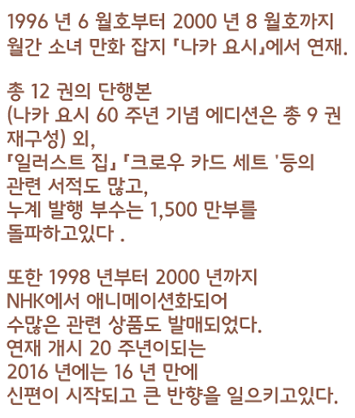

|
 |  |
||
 |
|||
 |
키노모토 사쿠라4월 1일 A형. 좋아하는 과목은 음악과 체육 싫어하는 과목은 수학. 봉인의 짐승 · 케로 짱에게 이끌려 "카드캡터"로써 카드를 수집한다. |
다이도우지 토모요9월 3일 A형. 사쿠라가 카드캡터로써 활동할 때의 복장은 모두 토모요가 만들고있다. 사쿠라의 활약을 비디오로 찍는 것을 좋아한다. |
|
리 샤오랑7월 13일 O형. 홍콩에서 온 전학생. 마술사 크로우 리드의 먼 친척. 나침반을 사용하여 크로우 카드를 수집하는 사쿠라의 라이벌. |
 |
케로크로우 카드 책을 지키는 봉인의 짐승. 마력이 부족하여 인형같은 모습이 되어있다. 오사카 방언으로 말하고 단 것을 아주 좋아한다. |
|
키노모토 후지타카1월 3일. 사쿠라의 아버지. 온화한 성격으로, 대학의 교수를 하고있다. 사실 키노모토 집에서 가장 운동 신경이 좋다. |
키노모토 토우야2월 29일 O형. 사쿠라의 오빠. 심술 궂은 태도를 취하고 있지만, 사실은 사쿠라를 걱정하고있다. |
||
츠키시로 유키토12월 25일 AB형. 토우야의 친구로, 매우 상냥하고 멋지다. |
|||